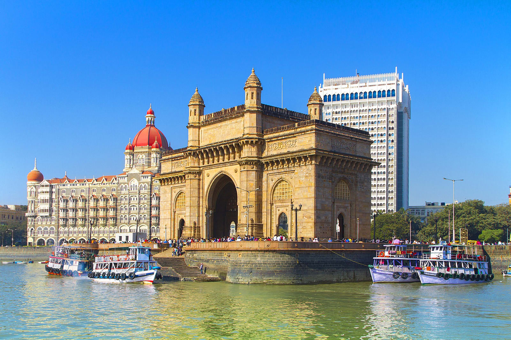

Top 5 Cities to Live & Work in India
India is famous for its incredible culture, tasty cuisine, scenic beauty and heritage sites. We show you the most beautiful cities countrywide with stunning urban landscapes, and a thriving cultural scene which you should visit.
Hyderabad, Andhra Pradesh
Hyderabad is situated in the region of Telangana and popularly known as city of Mughals and Nizams. Hyderabad is noted for its magnificent monuments, temples, bazaars, amusement parks, garden, cuisine, etc. You can never feel bore in this splendid city as you have countless options to visit and explore the place. The culture of Hyderabad is an amalgamation of migrated people who have come here from across the country. Therefore, you can find diversities in language, culture and lifestyle. The city offers both – the best of jobs and great accommodation options.
Mumbai, Maharashtra

Mumbai city is popularly known with various nicknames like ‘The Dream City’, ‘Land of Bollywood’, ‘Financial capital of India’ and much more. This city is marked for both i.e. commercial as well as entertainment capital of India. It has the highest number of wealthiest people in India. With the highest GDP, slums and heavy traffic, the city offers good basic amenities for the dwellers, including include clean water, transportation, infrastructure, educational institutes, healthcare facilities and business opportunities. From street shopping, easy transport availability, pretty parks, serene marine drive to best nightlife, Mumbai is the perfect place to live and work in India.
Pune, Maharashtra
With the best educational facilities and IT hub, Pune has an impressive lifestyle for youngsters. The city has an extensive range of excellent restaurants, historical sites, funky nightlife and a clean atmosphere. If you are adventure lover then Pune has direct access to the great outdoors which you can enjoy to have fun in your life. Pune offers you a splendid mix of universities, palaces, ashrams, museums and IT companies. You need to spend wisely when you are living in Pune otherwise, it may put a big hole in your pocket but the city gives some really great job opportunities.
Bangalore, Karnataka

Bangalore is one of the best cities in India where you can live and work effectively. The city has serene lakes, beautifully crafted garden & parks that will draw you towards it. Shopping at Brigade Road in Bangalore is a great experience where you can get a wide variety of trendy items at affordable price. Bangalore is the perfect place to leading startups and is also known for the biggest IT hub of India. The life in Bangalore is perfect in itself with matchless work-life balance, shopping, entertainment, travel, food, art & culture and last but not the least, the pleasant weather.
Chennai, Tamil Nadu
Chennai is one of the favorable cities to live and work. It is also a popular tourist place. Being an IT hub, the city is also well-known for its unique culture, passion for music, temples, beaches, and extreme hot weather. The night life is also very attractive for youth. You can find a numbers of pubs and bars with outstanding music played on rock and metal. Chennai is considered to be the safest places to live and work due to being less crowded place when compared to other cities.
Contact Us
Email: ourcompany@domain.com